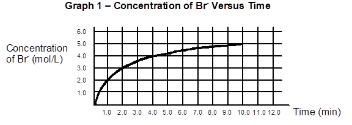
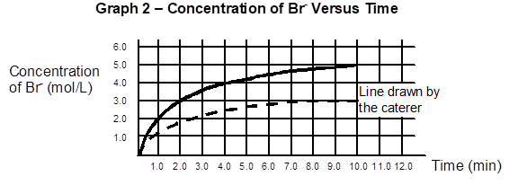

Question 9
Another aspect of a successful catering company is having an attractive presentation for the food.
A decoration that one catering company uses is a glass container in the shape of a tree trunk that changes from a dark brown colour to a lighter colour throughout an event.
This
colour change is accomplished through a chemical reaction between bromine (Br2)
reacting with phenol (C6H6O) and oxygen (O2)
to form bromine ion (Br–), hydrogen ion (H+) and carbon
dioxide gas (CO2). The balanced chemical reaction for this process
is shown below:
2 Br2(aq) + 2 C6H6O(aq) + 5 O2(g) ® 4 Br–(aq) + 12 H+(aq) + 6 CO2(g)
(Brown)
At
the beginning of the reaction, the presence of bromine, Br2, gives
the dark brown colour.
The graph below illustrates the concentration of the bromine ion, Br–(aq), as a function of time.

|
a) What was the average rate of formation
of the product H+(aq), in moles per litre per minute,
between 4 and 10 minutes? Show all your work. |
The caterer would like the brown colour in the display to last longer. She looked at Graph 1. She then drew a second line on Graph 2, found below. She wants to know if this new rate would slow down the colour change, making the display last longer.

|
b) Will the new rate slow down the colour
change? Justify your answer. |